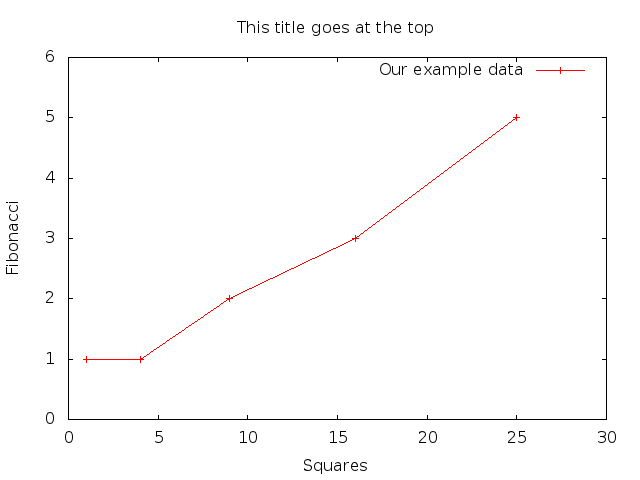
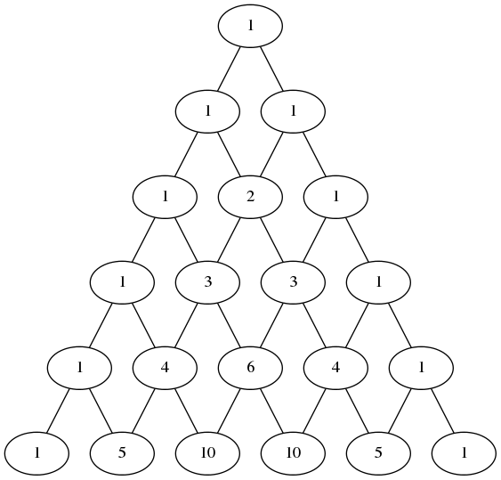

Babel – Org-mode Code Blocks
1 Background
This is based on a talk given by Eric Schulte:
http://github.com/eschulte/babel-presentation
Note that in order to use replicate the calculations in this document, you need to have:
- A very recent version of Emacs Org mode installed
- Some additional Emacs initialization (in the ".emacs" file)
The details for these two items are well-known but are not included in this document.
2 Org-mode – a very brief introduction
2.1 Outlines in plain text
Outlines
- everything is an outline
- navigate large files as if they were directories
Plain Text
- version control
- portable
- use other tools with other tools (e.g., notepad,
grep)
2.2 Export
+------> LaTeX/PDF
|
+------> HTML
+-----+ |
| Org |-------+------> plain text
+-----+ |
+------> Open-Doc
|
+------> Bibtex, DocBook, Freemind, xoxo, S5...
2.3 Spreadsheets and Tables
| 1 |
|---|
| 2 |
| 3 |
| 4 |
| 10 |
See, for instance:
http://orgmode.org/worg/org-tutorials/org-spreadsheet-intro.html
for some more details. Note, in particular, that the TBLFM line can be generated automatically from a formula entered in a given cell.
2.4 Much much more
(which I am not familiar with and won't focus on)
including…
- GTD (supports the "Getting Things Done" methodology)
- scheduling and agendas
- task management
See:
http://orgmode.org/guide/index.html
for an introduction.
3 Babel – using code and data in your documents
Integrating programming and natural languages in Org-mode documents.
-
The people is one and they have all one language; … and now nothing will be restrained from them

The Babel Fish is small, yellow and simultaneously translates from one spoken language to another.
;; live code execution (org-toggle-inline-images)
Type C-c C-c (control-c, followed by control-c) to execute a source block, e.g., to see/not see images displayed inline in the block above. There are many examples of this below.
4 Applications – uses of integrated code and data
- Reproducible Research (RR)
An article about computational science in a scientific publication is not the scholarship itself, it is merely advertising of the scholarship. The actual scholarship is the complete software development environment and complete set of instructions which generated the figures.
- Literate Programming (LP)
Let us change our traditional attitude to the construction of programs: Instead of imagining that our main task is to instruct a computer what to do, let us concentrate rather on explaining to human beings what we want a computer to do.
- working notes
- executable class notes, presentations and tutorials
5 Syntax – inline code, data and references
5.1 Objects
Just the general syntax used for objects in Org mode.
One important note is that Org mode contains features that make it very easy to create tables and lists. Also, source-code blocks will create the appropriate structures when the blocks are executed (via C-c C-c).
code block
body
- scalar data
number or string
tabular data
| 1 | 2 |
| 3 | 4 |
- list data
- 1
- 2
- 3
- 4
5.2 References
Objects may be referenced from inline code blocks. Here are some examples. Note that the "results" option tells Org mode if/how to display the results from the evaluation of the source block. The "exports" option tells Org mode what should be included HTML, PDF, etc., versions of the document (hit C-c C-e and then select an export option from the resulting list).
(print list) (reverse list)
| 4 | 3 | 2 | 1 |
table
| 1 | 2 |
| 3 | 4 |
t(table)
| 1 | 3 |
| 2 | 4 |
echo "table as seen in shell" echo "$data"
table as seen in shell 1 2 3 4
echo "reverse of transpose of table as seen in shell" echo "$data"
reverse of transpose of table as seen in shell 2 4 1 3
echo -e "replace some digits with corresponding strings\n" echo "$data" | sed 's/3/three/;s/2/two/'
replace some digits with corresponding strings two 4 1 three
6 Export – supporting reproducible research
Org mode supports direct, inline inclusion of LaTeX code. Another example is given below.
Note also the inclusion of an inline source block to calculate the mean of some data. The basic syntax is:
src_<language>[<options>]{<code>}
An exported version of the file will contain the results of the calculation (in place of the "src_R…" text).
The results of our experiment are shown in Table example. The
mean of column 2 of which is equal to 11
and a plot of which is shown in Figure example-plot.
| 1 | 1 |
| 1 | 4 |
| 2 | 9 |
| 3 | 16 |
| 5 | 25 |
Here's an example of passing data from another Org-mode block to the gnuplot utility. It's likely that people in statistics (and related fields) would do this directly in R, but this demonstrates some of the flexibility of Org mode.

7 Tangling – supporting literate programming
Tangle out shell scripts to visualize a logistic map. Note again the inline use of LaTeX. (To "tangle" is to extract only the code segments from a combined code-and-documentation document.)
\begin{equation*} x_{n+1}=rx_{n}(1-x_{n}) \end{equation*}This is IMPORTANT:
The code blocks in this section should not be executed within the context of Org mode. Just tangle (C-c C-v C-t) and run the generated scripts in separate windows, in the order:
- ./make-fifo
- R –vanilla -q -f generate-r-vals.R
- R –vanilla -q -f readAndPlotData.R
The purpose of this section is really just to demonstrate that code can be tangled. As usual, in our environment, all this would probably done directly inside an R program. On the other hand, the use of a FIFO (named pipe) and communicating producer-consumer processes might be interesting in their own right.
Note also that the FIFO will continue to exist as a file-like object until it is explicitly removed. There's no need to run "make-fifo" more than once.
Note also that this example probably will not work on a Windows machine.
mkfifo --mode a+rw /tmp/feedRplot
con <- fifo("/tmp/feedRplot", "wb", blocking=TRUE) xinit <- 0.5 cat (xinit, file=con) cat ("\n", file=con) nsteps <- 1000 cat (nsteps, file=con) cat ("\n", file=con) rvals <- seq(from=2.3, to=4.0, by=0.005) writeBin(rvals, con) cat ("\n", file=con) close(con)
conx <- fifo("/tmp/feedRplot", "rb", blocking=TRUE) xinit <- as.numeric(readLines(conx, n=1)) nsteps <- as.numeric(readLines(conx, n=1)) x11() plot(1, 1, xlim=c(2.4, 4), ylim=c(0, 1), type="n", ann=FALSE) while(!is.null(next.r.val <- readBin(conx, "double"))) { if (length(next.r.val) > 0) { x <- xinit for (i in 1:nsteps) { x <- next.r.val * x * (1 - x) } points(next.r.val, x, pch=1, cex=0.5) } else { break } } title(main="Logistic Map, bifurcation diagram", col.main="red", cex.main=2.0, xlab="r values", ylab="x values", cex.lab=2, col.lab="blue") text(x=2.8, y=0.9, labels=paste("xinit = ", xinit, sep=""), cex=1.5, col="green") text(x=2.8, y=0.8, labels=expression(x[n+1] %<-% r*x[n]*(1 - x[n])), cex=1.5, col="blue") text(x=2.8, y=0.7, labels=paste("nsteps = ", nsteps, sep=""), cex=1.5, col="red") Sys.sleep(30)
8 Example – Pascal's Triangle with Python and Dot
8.1 Generating Pascal's Triangle with Python
More examples of using Org mode as a meta-language.
def pascals_triangle(n): if n == 0: return [[1]] prev_triangle = pascals_triangle(n-1) prev_row = prev_triangle[n-1] this_row = map(sum, zip([0] + prev_row, prev_row + [0])) return prev_triangle + [this_row] pascals_triangle(n)
| 1 | |||||
| 1 | 1 | ||||
| 1 | 2 | 1 | |||
| 1 | 3 | 3 | 1 | ||
| 1 | 4 | 6 | 4 | 1 | |
| 1 | 5 | 10 | 10 | 5 | 1 |
Note: rows should sum to powers of 2.
pt <- sc_input pt[is.na(pt)] <- 0 rowSums(pt)
[1] 1 2 4 8 16 32
Here's a larger example, still involving Pascal's triangle. The reverse-diagonal elements should sum to Fibanocci numbers. The R code below checks this.
| 1 | |||||||
| 1 | 1 | ||||||
| 1 | 2 | 1 | |||||
| 1 | 3 | 3 | 1 | ||||
| 1 | 4 | 6 | 4 | 1 | |||
| 1 | 5 | 10 | 10 | 5 | 1 | ||
| 1 | 6 | 15 | 20 | 15 | 6 | 1 | |
| 1 | 7 | 21 | 35 | 35 | 21 | 7 | 1 |
pt <- sc_input pt[is.na(pt)] <- 0 revDiag <- sapply(1:nrow(pt), function (i) { sum ( sapply (i:1, function (j) { pt[i - j + 1, j] } ) ) } ) print(revDiag) ##### print sums of reverse-diagonal elements fibR <- function(n) { if (n <= 2) { return (1) } else { return (fibR(n - 1) + fibR(n - 2)) } } fibNos <- sapply(1:nrow(pt), function(n) fibR(n)) print(fibNos) #### print Fibanocci numbers all.equal(revDiag, fibNos) #### sums == Fibs?
[1] 1 1 2 3 5 8 13 21 [1] 1 1 2 3 5 8 13 21 [1] TRUE
8.2 Converting Pascal's Triangle to Dot with Python
I don't know anything about "dot", but this shows how to use it if you do. Again, we use Python to generate the dot code and feed the results to another language (dot) to process it.
8.3 Graphing Pascal's Triangle with Dot

8.4 Code blocks as functions
We've already seen examples of this above. Here's another. This is a slightly modified version of example at:
http://orgmode.org/worg/org-contrib/babel/intro.html
The R code block does a particularly simple calculation. This is just to make it easy to verify the result "in your head". The calculation could be arbitrarily complicated.
seq(1:n)
| 1 |
| 2 |
| 3 |
| 4 |
| 5 |
mean(x)
| mean |
|---|
| 2.5 |
Note that the table formula (TBLFM) invokes a source-code block to do the calculation, by means of the "sbe" (Source Block Evaluation) macro.
The implication of this is that the spreadsheet has at its disposal any of the languages supported by Org mode (and there are many).
9 Conclusion
Org-mode has many features which are well suited to RR and LP.
- open source (essential for RR)
- widely available
- active community
- general and extensible
- integrated into Emacs (will be included in Emacs24)